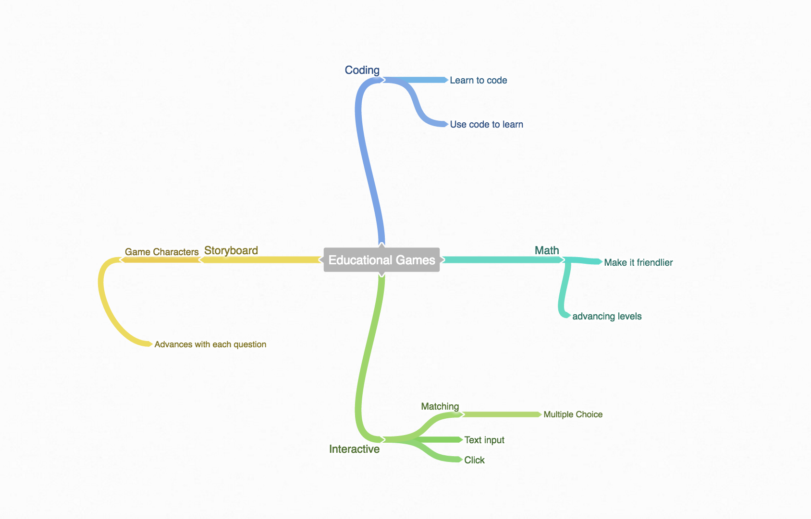
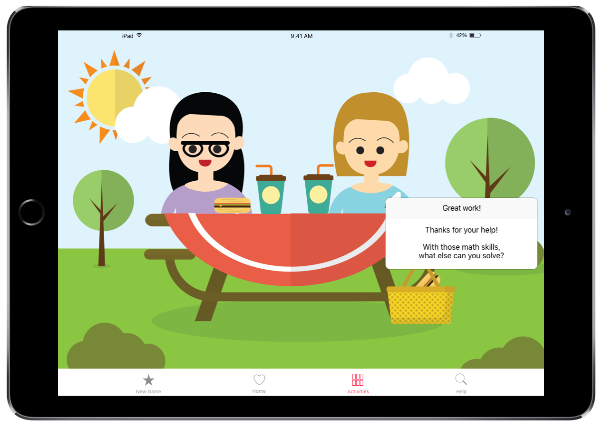

Background
Everyday experiences help provide a foundation for math skills. This process is called "Mathematization". When play is associated children are more engaged.
Children 3-5 are motivated to learn math. Math concepts are used in free play. Children from low income families do not have the same opportunities to learn technical math language. Intervention tools and curriculums are necessary.
The Vygotskian perspective states that everyday math terms develop meaning through children's participation in math at school and in everyday tasks. This semiotic activity, relationship between signs and meanings, helps children retain information.
Learning to mathemematize informal experience by making connections is extremely important to retention. As lower income students have less of opportunity to do so, the gap between them and their peers widens.
During their 4th year, children start being capable of doing basic arithmetic functions. During the first half of the year they gain an understanding of number words, verbal counting, number sequencings, the concepts of more and less, addition and subtraction. In the second half of the year they learn to count backwards, terms related to estimation, proximity of digits, word problems, and reasoning.
Design Question
How might we help children learn math skills through the mathematization of everyday activities?
Concept Statement
In order to provide children of all income levels the ability to mathematize informal experiences, I am making a game that incorporates math into simulations of familiar daily activities.
User Profiles
The target audience of the game is children between the ages of 4 and 6.
Lily:
- Age: 4
- Family Situation: Lily comes from an affluent family. While she has access to all of the resources available, she lacks parental interaction.
- Attitudes: Lily is very excited about school and learning.
- Motivations: While Lily is able to complete her math worksheets, she lacks an ability to apply these skills in real life situations. Lily’s parents want her to be able to practice math application, but they don't have the time to teach her.
Louisa:
- Age: 5
- Family Situation: Louisa’s family is lower middle class. Although her parents are extremely dedicated, they often work long hours and don't arrive home until Louisa is getting ready for bed.
- Attitudes: Louisa is very frustrated by school. She is behind academically, and doesn't understand how anything she is learning matters. Louisa loves to play soccer, and would rather spend time playing games then completing math worksheets.
- Motivations: Louisa’s parents want to make learning a fun activity. They believe if Louisa could see how math would help her outside of school, and have fun learning, then she would be motivated to catch up.
Context Analysis
The current educational landscape is focused on providing individualized education. When allowing students to learn at their own pace they are more likely to be successful, as they don't become frustrated and overwhelmed if they start to feel confused.
Emphasis on many short lessons accommodates young children's short attention spans. By providing live feedback and monitoring tools, it is easy for students and parents to see what skills need work.
Learning games are also quite popular. Games allow children to learn through real life simulations. By learning to make choices and to problem solve, children learn how to apply information rather then just memorizing facts. Access is not enough to solve the equity problem between students of other incomes. Interaction is key, and interactive games that promote student learning are a step forward.
Process
After examining learning during the group portion of the project, I was motivated to find a way to help young children learn. A strong foundation is necessary for more advanced learning, so I wanted to come up with way of helping solidify basic math skills.
As children learn best when information is associated with play, I felt like creating a fun, interactive math game would be a great way to motivate children to learn, and help them learn to apply these skills in real life situations.
I began by creating a simple layout that would be easy or young children to navigate. The navigation bar and question alerts are structured like those of an IOS app because most young children begin learning to use their parents phone from a very young age.
A combination of Adobe Illustrator and Photoshop were used to design the background scenes of the game, in combination with some vector images. Next, I imported the background images into Sketch, and added the iPad elements and designed the questions and other alerts. In order to create a basic prototype, I uploaded all of the images and alerts to Marvel, and programmed the basic user interactions.

In order to help children mathematize daily situations, Lily and Louisa go on adventures to the park and local cafe. By clicking on the different food items, users are prompted with different addition and subtraction questions.
Questions ask the players to either use their addition or subtraction skills to solve the problems. Players are not penalized for incorrect answers in order to not discourage them from continuing to play.
Players can navigate to other activity screens by selecting the activities icon on the bottom navigation bar.
If players get stuck, then can select the help icon in the bottom navbar. Doing so will allow them to search for their question, or read through the posted topics within each section.
Constraints
Because during early years development is so rapid, the game may only be suitable for a small age range.
User Testing
When user testing I received some valuable feedback. The game requires students to click, but doesn't provide instructions, or indications of what aspects of the page are clickable. It would be best if instructions were provided at the start, and if objects increased in scale when however over for future iterations.
Scoring
Children are often not motivated by a physical representation of how many points they have earned, as they keep score in their heads. By allowing players to set their own goals, their is less risk of anxiety and depression caused by playing. In order to keep children motivated to play, The Adventures of Lily and Louisa do not keep score. Instead, when a question is answered correctly, Lily and Louisa thank the player for their help and encourage them to keep playing.
